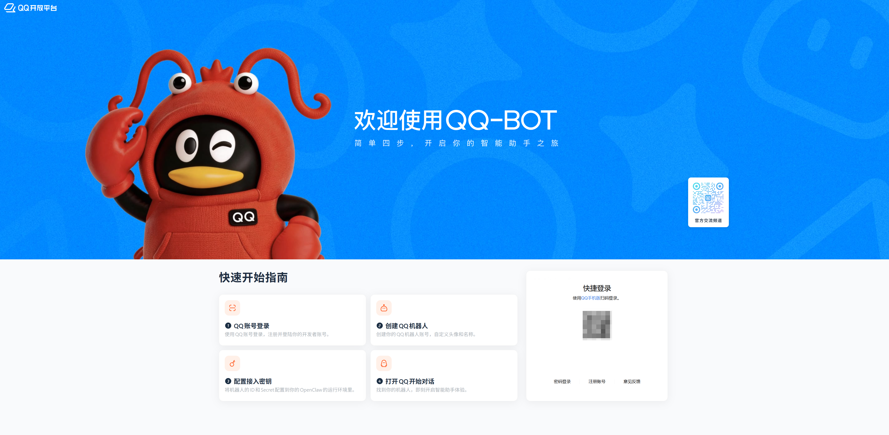
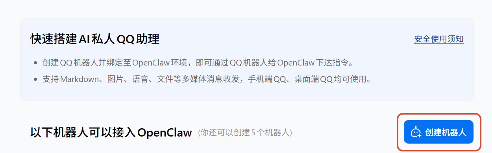
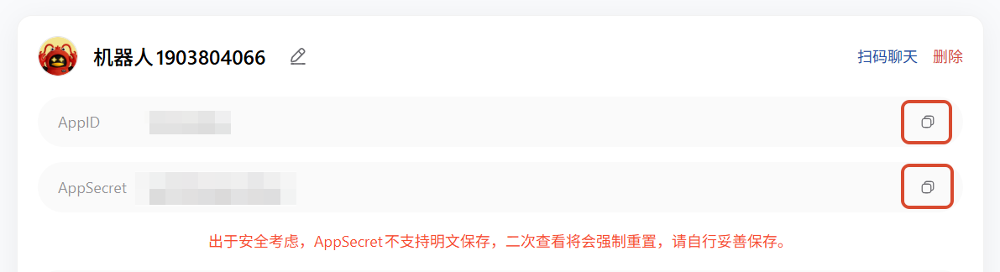
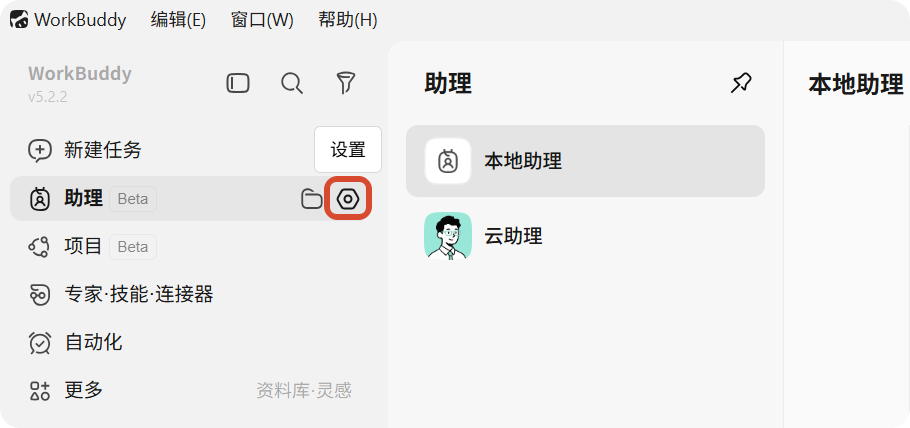
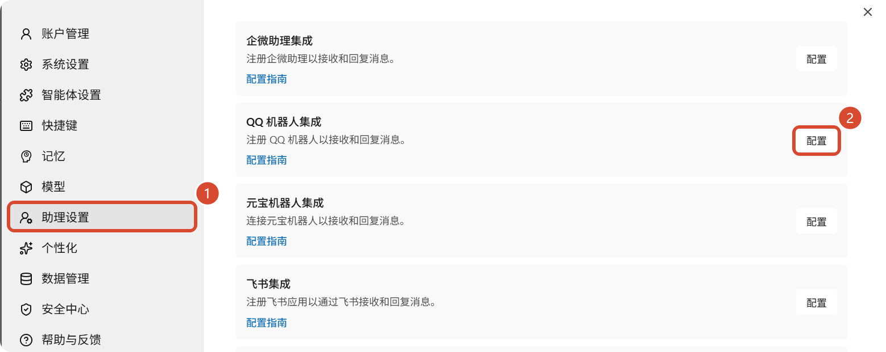
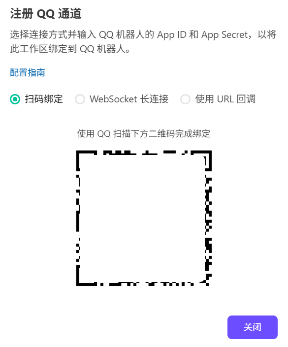
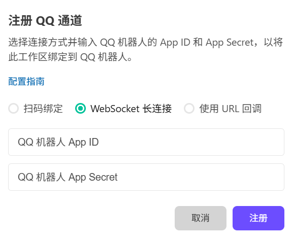
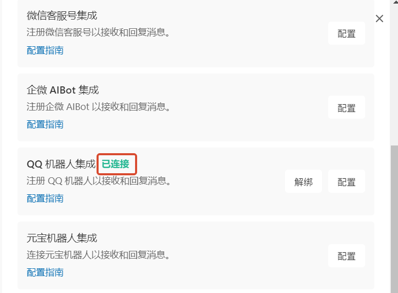
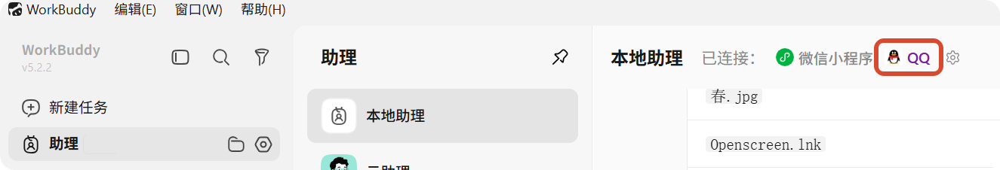

WorkBuddy 接入 QQ 指南
本指南将帮助您将 WorkBuddy 接入 QQ，让您可以通过 QQ 随时随地远程操控电脑上的 WorkBuddy 完成任务。
前提条件
在开始之前，请确保您已满足以下条件：
- 已在电脑上安装 WorkBuddy，并开启了 助理 远程控制功能
- 拥有一个已完成实名认证的 QQ 账号
提示
QQ 开放平台要求账号完成实名认证。如未认证，请先在 QQ 中完成实名认证后再进行后续操作。
1 注册并登录 QQ 开放平台
打开浏览器，访问 QQ 开放平台，使用QQ扫码登录。

2 创建机器人
点击创建机器人：

点击后会立刻成功，此时机器人会给你的QQ发一条成功消息，头像昵称可按喜好自定义编辑。
3 配置凭证
复制机器人的 AppID 和 AppSecret :

重要提示
出于安全考虑，AppSecret不支持明文保存，二次查看将会强制重置，请自行妥善保存。
将获取的凭证配置到 WorkBuddy 中：
- 打开 WorkBuddy，点击助理的设置 ⚙️图标后进入 助理设置

- 配置 QQ 机器人集成

- QQ 扫码连接已创建的机器人；或选择 WebSocket 长连接 / 使用 URL 回调 填入刚才复制的 AppID 和 AppSecret 后点击注册，完成连接：


- 配置成功
在助理设置中，QQ 机器人集成显示已连接

在助理中可以看到QQ图标

恭喜
您已成功将 WorkBuddy 接入 QQ！现在可以通过 QQ 随时随地远程控制 WorkBuddy 完成各种编程任务了。